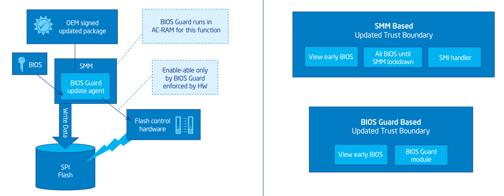

Signed Capsule Update
Platform firmware often requires an update. NIST provides multiple guidelines for authenticated updates (SP800-147, SP800-147B, SP800-193). EDK II implements authenticated updates based on Signed UEFI Capsule Updates and Capsule Recovery. Table 2-8 describes firmware update verification.
Table 2-8: Firmware Update Verification
| Item | Entity | Provider | Location |
|---|---|---|---|
| TP | Firmware Update Verification | OEM | Originally on flash, loaded into flash unlockable environment. (It could be DRAM before the flash is locked, or SMRAM.) |
| CDI | Firmware Update TCB Code | OEM | Originally on flash, loaded into flash unlockable environment. |
| Firmware Update Signature Database (Policy) | OEM | Originally on flash, loaded into flash unlockable environment. | |
| UDI | Firmware Update Package | OEM | Originally on external storage (e.g. Hard drive, USB, Memory, or Read-Write Flash), loaded into flash unlockable environment. |
Signing
The UDI is the whole new firmware image. As such, the whole firmware binary needs to be signed by the OEM private key.
Public Key Storage
The OEM public key should be embedded in the original firmware. As such it can be used to verify the new firmware binary.
A policy may be updated along with the new Firmware image.
Verification
During the firmware update process, TP is inside of the original firmware image. TP will load the new firmware image from external storage into memory. The memory can be normal DRAM (if the update happens before any 3rd party code is executed) or flash (in an unlocked state). If the update must occur after 3rd party code execution, the update must occur in an isolated execution environment (example: SMRAM). Care must be taken that both verification and update occur in the same environment, and there is no TOC-TOU threat (example: DMA attack). If TP passes verification, the new firmware image is programmed into flash. If verification fails, the flash update process is aborted.
Intel® BIOS Guard
The implementation above assumes any code in the execution environment is secure. Reality shows that this is difficult to implement due to the number of drivers present in this environment. Intel provides the Intel® BIOS Guard solution which only allows the flash device to be programmed by the Intel® BIOS Guard AC module. This module performs firmware verification and updates in an Authenticated Code RAM (AC-RAM) environment. This is designed to prevent issues early in the firmware boot process or SMM from impacting the verification and update flow.
Figure 2-6 describes Intel® BIOS Guard components. Table 2-9 described firmware update verification using Intel® BIOS Guard.

Figure 2-6: Intel® BIOS Guard
Table 2-9: Firmware Update Verification
| Item | Entity | Provider | Location |
|---|---|---|---|
| TP | ACM FU Verification | Intel | Original on the flash, loaded into AC-RAM |
| CDI | Intel® BIOS Guard ACM | Intel | Original on the flash, loaded into AC-RAM |
| PubKey Hash (Policy) | OEM | Calculated during Firmware Boot early phase, and write to the CPU register. | |
| UDI | Firmware Update Package | OEM | External Storage (e.g. Hard drive, USB, Memory, or Read-Write Flash), loaded into SMRAM. |
Signing
The UDI is provided a new firmware image, the same as the UEFI Capsule Update implementation. The entire firmware binary must be signed using the OEM private key.
Public Key Storage
The OEM public key should be embedded in the original firmware. During boot, the early BIOS needs to program the public key hash into the CPU BIOS Guard register. This is used by the BIOS Guard module during the verification. The policy may be updated along with the new BIOS image.
Verification
During the firmware update process, a SMM module will load the firmware image and trigger the BIOS Guard module. TP is inside of the BIOS Guard module. TP first verifies if the OEM public key in the new firmware image matches the CPU BIOS Guard register, then verifies if the signature of the new firmware image. If TP passes verification, the BIOS Guard module writes the new firmware image into flash. If the verification fails, BIOS Guard returns with a failure.